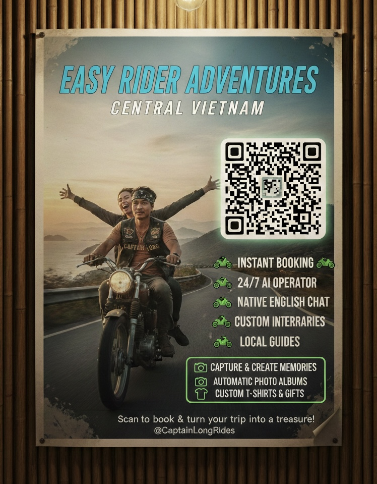

5. Mạng Lưới Toàn Quốc & Nguồn Thu Thụ Động (National Scale & Passive Income)
The AI isn't limited to Central Vietnam. It operates in every Easy Rider group across the country. It uses YOUR WhatsApp identity—it looks, talks, and acts exactly like you.
"Tầm nhìn không giới hạn": Hệ thống không chỉ quét ở Đà Nẵng mà phủ sóng toàn bộ các group Easy Rider từ Bắc chí Nam.
- Định danh cá nhân: AI sử dụng chính tài khoản WhatsApp của anh. Nó phản hồi bằng phong cách của anh, khiến mọi đại lý và khách hàng đều tin rằng họ đang làm việc với "Chính chủ".
- Mô hình "Thuê bao tháng" (SaaS): Chúng ta có thể bán quyền truy cập hệ thống này cho các anh em Easy Rider khác.
The AI knows where everyone is and where they will be. It matches jobs to the right rider at the right time.
- Thu nhập kép: Anh vừa thu được phí thuê bao hàng tháng, vừa cắt được phần trăm hoa hồng (commission) trên mỗi cuốc xe mà AI bắn cho họ.
Kết quả: Anh trở thành "Tổng đại lý" điều phối vận tải du lịch toàn quốc ngay trên chiếc điện thoại của mình.
7. Poster Thông Minh: "Máy In Tiền" Tại Hostel/Hotel
When a guest scans your poster, the AI doesn't just show a price—it starts a live sales conversation. It manages the booking, the drivers, and the commissions for the hotel while you are on the road.
Biến Poster thành Nhân viên Sale 24/7:
Khách quét mã QR tại Hostel -> AI tự động chào hỏi, tư vấn lộ trình và chốt đơn bằng tiếng Anh chuyên nghiệp.
- Tự động điều phối (Auto-Dispatch): Nếu anh đang bận chở khách, AI sẽ không bỏ qua đơn đó. Nó sẽ tự động liên hệ tài xế khác trong mạng lưới của anh để giao việc.
- Quản lý tài chính tự động (Automated Commission):
AI tự tính toán và phân bổ tiền "phế":
- Phần của Hostel/Hotel (Tiền hoa hồng giới thiệu).
- Phần của Tài xế chạy hộ.
- Phần Lợi nhuận ròng chảy về túi anh.
- Hoạt động khi đang lái xe: Tất cả những việc này diễn ra hoàn toàn tự động trong khi tay anh đang giữ lái trên đường. Anh chỉ cần kiểm tra số dư tài khoản vào cuối ngày.
"Anh không cần có mặt, hệ thống vẫn vận hành và sinh lời."
DEMO: SMART POSTER
This is what we place in every high-traffic Hostel and Hotel.

Instant Booking | Native English | Memory Upsells
Tầm nhìn mở rộng (Future Growth)
The technology behind this isn't limited to riding. It is designed for any business that relies on chat-based bookings.
Giải pháp này có thể áp dụng linh hoạt cho nhiều mô hình khác tại Đà Nẵng như:
- Tour du lịch & Thuê xe: Tự động hóa việc đặt chỗ và chăm sóc khách.
- Dịch vụ lưu trú & Spa: Quản lý lịch hẹn qua tin nhắn 24/7.
Chúng ta có thể bắt đầu nhỏ với Easy Riders và mở rộng dần khi hệ thống đã ổn định.